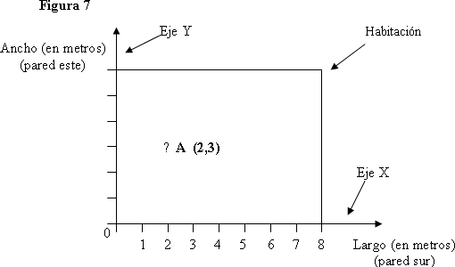

Supongamos que el Punto A (vea la Figura 6) representa el lugar donde usted está situado dentro de la habitación. Usted se encuentra exactamente a tres metros de la pared sur y a 2 metros de la pared oeste. Ahora la pregunta es, ¿cómo puede representar inequívocamente su posición dentro de la habitación por medio de un gráfico? La Figura 7 representa la solución. El resto de este módulo se basa en el análisis del proceso a través del cual este gráfico (Figura 7) fue trazado o construido.
Para trazar un gráfico (como por ejemplo el de la Figura 7) se deben seguir una serie de pasos o etapas. En primer lugar, se deben identificar las variables representadas en los ejes X e Y. En nuestro ejemplo, el eje X es el largo de la pared y el eje Y el ancho, los cuales miden la distancia. En segundo lugar, se deben identificar las unidades en que se mide cada variable. En nuestro ejemplo, utilizamos metros. En tercer lugar, se debe identificar un punto de referencia desde el cual medir las variables, es decir, un punto de origen, fijo, desde el cual medir el largo y el ancho en metros. En un gráfico, el punto de referencia se denomina precisamente “punto de origen” o simplemente “origen”. En nuestro ejemplo el “punto de origen” es aquél en donde tanto el largo como el ancho tienen un valor de cero y se ubica en el ángulo sudoeste del gráfico.
Las relaciones se muestran en un gráfico usando ‘puntos’, como el punto A. Los puntos describen las relaciones entre las variables representadas en los ejes del gráfico. Como sabemos, en el ejemplo las variables son el “largo” y el “ancho” de la habitación y están medidas en metros. Así, el punto A representa cierta magnitud de largo (2 metros) y de ancho (3 metros), ambas magnitudes medidas sobre los respectivos ejes X e Y.
Los puntos de un gráfico se pueden describir usando coordenadas. Una coordenada es un par de números que se usan para describir la posición en un plano. El punto A representa un par de coordenadas, una para cada dimensión, o variables, esto es, el largo y el ancho. El punto A está representado por el par de números (2, 3), puesto que por convención se establece que el primer número del par representa el eje X, mientras que el segundo representa el eje Y. Un par de coordenadas es una forma inequívoca de describir la posición en un plano, como el punto en que usted está situado exactamente en una habitación. El “punto de origen” de un gráfico también se llama coordenadas (0,0). Toda coordenada representa un punto en un plano. En nuestro ejemplo, las coordenadas (0,0) representan un punto en el cual el largo y el ancho son cero.